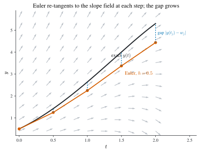
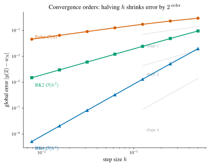
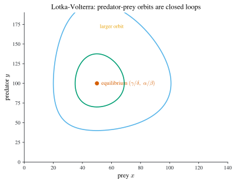
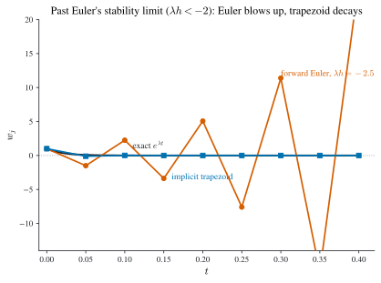
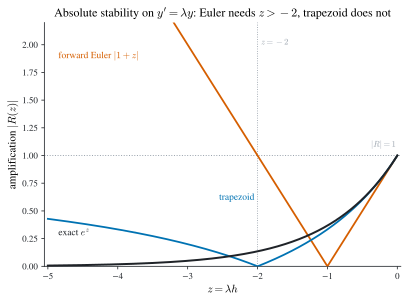

3 Initial-Value Problems for ODEs
\[ \newcommand{\R}{\mathbb{R}} \newcommand{\C}{\mathbb{C}} \newcommand{\N}{\mathbb{N}} \newcommand{\E}{\mathbb{E}} \newcommand{\eps}{\varepsilon} \newcommand{\abs}[1]{\left\lvert #1 \right\rvert} \newcommand{\norm}[1]{\left\lVert #1 \right\rVert} \newcommand{\ninf}[1]{\left\lVert #1 \right\rVert_{\infty}} \newcommand{\ntwo}[1]{\left\lVert #1 \right\rVert_{2}} \newcommand{\none}[1]{\left\lVert #1 \right\rVert_{1}} \newcommand{\inner}[2]{\left\langle #1,\, #2 \right\rangle} \newcommand{\bigO}{\mathcal{O}} \newcommand{\dd}{\mathrm{d}} \newcommand{\diff}[2]{\frac{\mathrm{d} #1}{\mathrm{d} #2}} \newcommand{\pdiff}[2]{\frac{\partial #1}{\partial #2}} \newcommand{\spec}{\rho} \newcommand{\cond}{\kappa} \newcommand{\Span}{\operatorname{span}} \newcommand{\rank}{\operatorname{rank}} \newcommand{\tr}{\operatorname{tr}} \newcommand{\diag}{\operatorname{diag}} \newcommand{\argmax}{\operatorname*{arg\,max}} \newcommand{\argmin}{\operatorname*{arg\,min}} \newcommand{\defeq}{:=} \]
Most laws of change are written as differential equations, and most of them cannot be solved in closed form. This chapter builds the numerical machinery for the initial-value problem (IVP) \[ \diff{y}{t}=f(t,y),\qquad a\le t\le b,\qquad y(a)=\alpha , \tag{3.1}\] which asks for the trajectory \(y(t)\) that starts at \(\alpha\) and obeys the slope field \(f\). We first pin down when Equation 3.1 even has a well-behaved solution, the Lipschitz condition and well-posedness, then march that solution forward on a mesh with Euler’s method, measure the error it commits, and systematically improve it: Taylor and Runge-Kutta one-step methods, adaptive step-size control, multistep Adams methods and predictor-correctors, and finally the implicit methods that alone cope with stiff problems. Throughout, \(w_j\approx y(t_j)\) denotes the computed approximation at the mesh point \(t_j=a+jh\), \(h=(b-a)/N\) (see Notation).
3.1 Well-posedness: when does a solution exist and depend stably on data?
A numerical method chases the true solution, so we should first know that a true solution exists, is unique, and does not swing wildly under small perturbations. The single hypothesis that buys all three is a one-sided smoothness bound on \(f\) in its second argument.
Definition 3.1 (Lipschitz condition) A function \(f(t,y)\) satisfies a Lipschitz condition in \(y\) on a set \(D\subset\R^2\) if there is a constant \(L>0\) with \[ \abs{f(t,y_1)-f(t,y_2)}\le L\,\abs{y_1-y_2} \qquad\text{whenever }(t,y_1),(t,y_2)\in D . \] \(L\) is the Lipschitz constant.
For example \(f(t,y)=t\abs{y}\) on \(D=\{(t,y):0\le t\le T\}\) satisfies the condition with \(L=T\), because \(\abs{t\abs{y_1}-t\abs{y_2}}\le t\,\abs{y_1-y_2}\le T\abs{y_1-y_2}\). By contrast \(f(t,y)=ty^2\) satisfies no Lipschitz condition on that unbounded strip: since \(\abs{ty_1^2-ty_2^2}=t\abs{y_1+y_2}\,\abs{y_1-y_2}\) and \(t\abs{y_1+y_2}\) is unbounded, no single \(L\) works, though restricting \(y\) to a bounded band \(\abs{y}\le Y\) restores it with \(L=2TY\).
Verifying the inequality directly is awkward; on a convex domain a bound on the partial derivative is equivalent and far easier to check.
Definition 3.2 (Convex set) A set \(D\subset\R^2\) is convex if for all \((t_1,y_1),(t_2,y_2)\in D\) and all \(\lambda\in[0,1]\), \((1-\lambda)(t_1,y_1)+\lambda(t_2,y_2)\in D\): the whole segment joining any two of its points lies in \(D\).
Theorem 3.1 (Derivative bound implies Lipschitz) Suppose \(f(t,y)\) is defined on a convex set \(D\subset\R^2\) and there is \(L>0\) with \(\bigl\lvert \pdiff{f}{y}(t,y)\bigr\rvert\le L\) for all \((t,y)\in D\). Then \(f\) satisfies a Lipschitz condition in \(y\) on \(D\) with constant \(L\).
Proof. Fix \((t,y_1),(t,y_2)\in D\). Convexity keeps the horizontal segment between them inside \(D\), so the mean value theorem applies to \(y\mapsto f(t,y)\): there is \(\xi\) between \(y_1\) and \(y_2\) with \(f(t,y_1)-f(t,y_2)=\pdiff{f}{y}(t,\xi)\,(y_1-y_2)\). Taking absolute values and using the bound gives \(\abs{f(t,y_1)-f(t,y_2)}\le L\,\abs{y_1-y_2}\). \(\square\)
With this we can state precisely what it means for Equation 3.1 to be a sensible problem to solve numerically.
Definition 3.3 (Well-posed problem) The IVP Equation 3.1 is well-posed if (i) it has a unique solution \(y(t)\), and (ii) there exist \(\eps_0>0\) and \(k>0\) such that for every \(\eps\in(0,\eps_0)\), every continuous perturbation \(\delta(t)\) with \(\ninf{\delta}<\eps\), and every \(\abs{\delta_0}<\eps\), the perturbed problem \[ \diff{z}{t}=f(t,z)+\delta(t),\qquad z(a)=\alpha+\delta_0 \] has a unique solution \(z(t)\) with \(\abs{z(t)-y(t)}<k\eps\) for all \(t\in[a,b]\).
In words: a unique solution exists, and small changes to the equation or the initial value produce only proportionally small changes to the solution. The Lipschitz condition delivers both.
Theorem 3.2 (Lipschitz implies well-posed) Let \(D=[a,b]\times\R\). If \(f\) is continuous on \(D\) and satisfies a Lipschitz condition in \(y\) on \(D\), then the IVP Equation 3.1 is well-posed.
Proof. Existence and uniqueness are the Picard–Lindelöf theorem; stability follows from a Grönwall argument. If \(y,z\) solve the original and perturbed problems, then \(e(t)=z(t)-y(t)\) satisfies \(e(a)=\delta_0\) and \(e'(t)=f(t,z)-f(t,y)+\delta(t)\), so \(\abs{e'}\le L\abs{e}+\eps\). Grönwall’s inequality integrates this to \(\abs{e(t)}\le\bigl(\abs{\delta_0}+\tfrac{\eps}{L}\bigr)e^{L(t-a)}\), which is bounded by \(k\eps\) with \(k=(1+\tfrac1L)e^{L(b-a)}\). We reproduce the full technical proof only for the discrete analogue below (Theorem 3.3), which is what a numerical method actually needs. \(\square\)
As a check, \(y'=y-t^2+1\) on \([0,2]\) has \(\pdiff{f}{y}\equiv 1\), so \(L=1\) and the problem is well-posed; its exact solution is \(y(t)=(t+1)^2-\tfrac12 e^{t}\), which we use as a running test case.
3.2 Euler’s method and its error
The simplest solver replaces the derivative in Equation 3.1 by a forward difference. Expanding the exact solution to two terms about \(t_j\), \[ y(t_{j+1})=y(t_j)+h\,y'(t_j)+\tfrac{h^2}{2}y''(\xi_j) =y(t_j)+h\,f\bigl(t_j,y(t_j)\bigr)+\tfrac{h^2}{2}y''(\xi_j), \] and dropping the \(\bigO(h^2)\) remainder gives Euler’s method.
Set \(w_0=\alpha\). For \(j=0,1,\dots,N-1\), \[ w_{j+1}=w_j+h\,f(t_j,w_j). \tag{3.2}\] Each step costs a single evaluation of \(f\).
Geometrically we follow the slope field’s tangent for one step of length \(h\), then re-read the slope and repeat. Each step starts from the already-imperfect \(w_j\), not from the true \(y(t_j)\), so it re-tangents to a shifted flow line and the polyline drifts off the exact curve; the error accumulates, but in a controlled way (see Figure 3.1).

Theorem 3.3 (Euler convergence bound) Let \(f\) be continuous and Lipschitz in \(y\) with constant \(L\) on \([a,b]\times\R\), and let \(y\in C^2[a,b]\) solve Equation 3.1 with \(M=\max_{t\in[a,b]}\abs{y''(t)}\). Then the Euler iterates Equation 3.2 satisfy, for each \(j\), \[ \abs{y(t_j)-w_j}\le \frac{hM}{2L}\Bigl(e^{L(t_j-a)}-1\Bigr). \tag{3.3}\]
Proof. Subtract Equation 3.2 from the two-term expansion to get, with the error \(E_j\defeq\abs{y(t_j)-w_j}\), \[ y(t_{j+1})-w_{j+1} =\bigl(y(t_j)-w_j\bigr)+h\bigl[f(t_j,y(t_j))-f(t_j,w_j)\bigr]+\tfrac{h^2}{2}y''(\xi_j). \] The triangle inequality and the Lipschitz bound give \(E_{j+1}\le(1+hL)E_j+\tfrac{h^2}{2}M\). Adding \(\tfrac{hM}{2L}\) to both sides and factoring shows the shifted quantity \(p_j\defeq E_j+\tfrac{hM}{2L}\) obeys \(p_{j+1}\le(1+hL)p_j\), hence \(p_j\le(1+hL)^jp_0\). Since \(E_0=0\), \(p_0=\tfrac{hM}{2L}\), and using \(1+hL\le e^{hL}\) so that \((1+hL)^j\le e^{jhL}=e^{L(t_j-a)}\), \[ E_j\le p_j-\tfrac{hM}{2L}\le \tfrac{hM}{2L}\bigl((1+hL)^j-1\bigr)\le\tfrac{hM}{2L}\bigl(e^{L(t_j-a)}-1\bigr). \qquad\square \]
The bound is \(\bigO(h)\): halving the step halves the error, so Euler is a first-order method, and it converges, \(E_j\to0\) as \(h\to0\). Two caveats temper the good news. The constant grows exponentially in \(t_j\), so long time intervals or large \(L\) demand very small \(h\); and chaotic problems can defeat any fixed-precision method entirely.
Formula Equation 3.3 suggests taking \(h\to0\), but on a real machine each step also injects a round-off error \(\delta_{j+1}\) with \(\abs{\delta_{j+1}}\le\delta\). Repeating the proof with this extra term gives \[ \abs{y(t_j)-u_j}\le\frac{1}{L}\Bigl(\frac{hM}{2}+\frac{\delta}{h}\Bigr)\bigl(e^{L(t_j-a)}-1\bigr)+\delta\,e^{L(t_j-a)}. \] The bracket \(\tfrac{hM}{2}+\tfrac{\delta}{h}\) (dropping constants) increases as \(h\to0\) because of the \(\delta/h\) term: too many steps accumulate too much round-off. Minimizing over \(h\) gives the optimal step \[ h_{\mathrm{opt}}=\sqrt{\frac{2\delta}{M}}=\bigO(\sqrt\delta), \] below which finite precision makes the answer worse, not better.
Euler versus RK4 on the running example
To make the order gap concrete, march the running case \(y'=y-t^2+1\), \(y(0)=0.5\) on \([0,2]\) with \(h=0.2\), using both Euler Equation 3.2 and RK4 Equation 3.9 (Theorem 3.5, four evaluations per step), against the exact \(y(t)=(t+1)^2-\tfrac12 e^{t}\) (Table 3.1). Euler’s first step reproduces the value cited in Section 3.4.1, \(w_1=0.5+0.2(0.5-0+1)=0.8\).
| \(t_j\) | Euler \(w_j\) | RK4 \(w_j\) | exact \(y(t_j)\) | Euler error | RK4 error |
|---|---|---|---|---|---|
| \(0.2\) | \(0.800000\) | \(0.829293\) | \(0.829299\) | \(2.9\times10^{-2}\) | \(5.3\times10^{-6}\) |
| \(0.4\) | \(1.152000\) | \(1.214076\) | \(1.214088\) | \(6.2\times10^{-2}\) | \(1.1\times10^{-5}\) |
| \(1.0\) | \(2.458176\) | \(2.640823\) | \(2.640859\) | \(1.8\times10^{-1}\) | \(3.6\times10^{-5}\) |
| \(1.6\) | \(3.950128\) | \(4.283410\) | \(4.283484\) | \(3.3\times10^{-1}\) | \(7.4\times10^{-5}\) |
| \(2.0\) | \(4.865784\) | \(5.305363\) | \(5.305472\) | \(4.4\times10^{-1}\) | \(1.1\times10^{-4}\) |
The Euler column drifts steadily below the exact solution (the sign of the \(\bigO(h)\) tangent lag of Figure 3.1), while RK4 tracks it to four or five digits throughout. This is the same accuracy-per-step story the convergence plot Figure 3.2 makes across a range of \(h\).
3.3 Local truncation error and consistency
To compare methods we need a per-step measure of fidelity that ignores accumulated error. Write a general one-step method as \(w_{j+1}=w_j+h\,\phi(t_j,w_j,h)\), where \(\phi\) is the method’s slope estimate, \(\phi=f\) for Euler.
Definition 3.4 (Local truncation error) The local truncation error (LTE) of the one-step method \(w_{j+1}=w_j+h\,\phi(t_j,w_j,h)\) at step \(j+1\) is \[ \tau_{j+1}(h)\defeq\frac{y(t_{j+1})-y(t_j)}{h}-\phi\bigl(t_j,y(t_j),h\bigr), \tag{3.4}\] the amount by which the exact solution fails to satisfy the update, per unit step. It is the error made in one step from exact data.
For Euler, \(\phi=f=y'\), so Equation 3.4 and the two-term expansion give \(\tau_{j+1}(h)=\tfrac{h}{2}y''(\xi_j)\), whence \(\abs{\tau_{j+1}(h)}\le\tfrac{hM}{2}=\bigO(h)\): Euler’s LTE is first order, consistent with Equation 3.3. The minimal demand on any method is that this per-step error vanish in the limit.
Definition 3.5 (Consistency) A one-step method is consistent with the ODE if its LTE vanishes uniformly as \(h\to0\): \[ \lim_{h\to0}\ \max_{0\le j\le N}\ \abs{\tau_{j+1}(h)}=0 . \] Equivalently, \(\phi(t,y,0)=f(t,y)\) for all \(t\): as the step shrinks, the method’s slope estimate reduces to the true slope.
Consistency alone is not convergence, but for one-step methods it is nearly the whole story. If in addition \(\phi\) is Lipschitz in \(w\) (uniformly in \(h\) on \(0<h<h_0\)), then the method is stable, and the global error inherits the local one: \[ \abs{y(t_j)-w_j}\le\frac{\tau(h)}{L}\,e^{L(t_j-a)},\qquad \tau(h)\defeq\max_j\abs{\tau_{j+1}(h)} . \] This is the same estimate as the Euler bound Equation 3.3, merely loosened: dropping the \(-1\) in the factor \((e^{L(t_j-a)}-1)\) and writing \(\tau(h)\) for \(\tfrac{hM}{2}\) trades the sharp constant for a form that holds for any consistent one-step method, so the two do not disagree. Thus consistency plus stability implies convergence (the Lax equivalence principle for ODEs), and for one-step methods stability is automatic once \(\phi\) is Lipschitz, exactly the Euler proof, now abstracted. As an illustration, the modified-Euler slope \(\phi(t,w,h)=\tfrac12\bigl[f(t,w)+f(t+h,w+hf(t,w))\bigr]\) is Lipschitz in \(w\) with constant \(L=\widehat L+\tfrac12 h\widehat L^2\) whenever \(\abs{\pdiff{f}{y}}\le\widehat L\), so it too is convergent. This slope is exactly Heun’s method, a sibling of the midpoint scheme Equation 3.7: both are second-order Runge-Kutta formulas, differing only in where they sample the second slope, so the illustration here is not a one-off but a preview of the next section.
3.4 Taylor methods: higher order by more derivatives
If \(\tau=\bigO(h)\) is too crude, keep more Taylor terms. Since \(y'=f\), differentiating along the solution gives \(y''=f'\), \(y'''=f''\), and so on, where \(f'\) is the total derivative \[ f'(t,y)=\pdiff{f}{t}(t,y)+\pdiff{f}{y}(t,y)\,f(t,y). \] Matching the \((n+1)\)-term expansion of \(y(t_{j+1})\) defines the Taylor method of order \(n\): \[ w_{j+1}=w_j+h\,T^{(n)}(t_j,w_j),\qquad T^{(n)}(t,w)=f(t,w)+\tfrac{h}{2}f'(t,w)+\dots+\tfrac{h^{n-1}}{n!}f^{(n-1)}(t,w). \tag{3.5}\] Subtracting from the Taylor expansion, the \(y',\dots,y^{(n)}\) terms cancel and the first survivor is the \((n+1)\)-st, divided by the extra \(h\) in Equation 3.4: \[ \tau_{j+1}(h)=\frac{h^{n}}{(n+1)!}\,y^{(n+1)}(\xi_j)=\bigO(h^{n}), \] so a Taylor method of order \(n\) has an order-\(n\) LTE. The catch is the \(f^{(k)}\): even \(T^{(2)}(t,w)=f+\tfrac{h}{2}\bigl(\pdiff{f}{t}+\pdiff{f}{y}f\bigr)\) requires two hand-coded partial derivatives, and higher orders quickly become intractable. Runge-Kutta methods buy the same order using only extra evaluations of \(f\) itself.
The running example, worked
Take the running test case \(y'=y-t^2+1\) on \([0,2]\), \(y(0)=0.5\). Here \(\pdiff{f}{t}=-2t\) and \(\pdiff{f}{y}=1\), so the order-\(2\) slope is \[ T^{(2)}(t,w)=(w-t^2+1)+\tfrac{h}{2}\bigl(-2t+(w-t^2+1)\bigr), \] and substituting into \(w_{j+1}=w_j+hT^{(2)}(t_j,w_j)\) and collecting terms gives an explicit recursion in \(w_j,t_j\) alone: \[ w_{j+1}=\Bigl(1+h+\tfrac{h^2}{2}\Bigr)w_j-\Bigl(h+\tfrac{h^2}{2}\Bigr)t_j^2-h^2 t_j+h+\tfrac{h^2}{2}. \tag{3.6}\] With \(h=0.2\) the coefficients are \(1.22,\,0.22,\,0.04,\,0.22\), so \(w_{j+1}=1.22\,w_j-0.22\,t_j^2-0.04\,t_j+0.22\). Starting from \(w_0=0.5\) at \(t_0=0\), \[ w_1=1.22(0.5)+0.22=0.83,\qquad w_2=1.22(0.83)-0.22(0.04)-0.04(0.2)+0.22=1.2158. \] The exact solution \(y(t)=(t+1)^2-\tfrac12 e^{t}\) gives \(y(0.2)=0.8292986\) and \(y(0.4)=1.2140877\), so the errors after one and two steps are \(7.0\times10^{-4}\) and \(1.7\times10^{-3}\), a marked gain on Euler, whose first step \(w_1=0.8\) already errs by \(2.9\times10^{-2}\), forty times larger at the same \(h\).
3.5 Runge-Kutta methods
The idea is to imitate the Taylor slope \(T^{(n)}\) by sampling \(f\) at cleverly chosen interior points, so no derivatives of \(f\) are ever formed. The prototype is second order.
Theorem 3.4 (Midpoint method is second order) The second-order Runge-Kutta (midpoint) method \[ w_{j+1}=w_j+h\,f\!\left(t_j+\tfrac{h}{2},\,w_j+\tfrac{h}{2}f(t_j,w_j)\right) \tag{3.7}\] has LTE \(\bigO(h^2)\), using two evaluations of \(f\) per step and no derivatives.
Proof. The two-variable Taylor expansion of \(f\) about \((t,y)\) gives \[ f\!\left(t+\tfrac{h}{2},y+\tfrac{h}{2}f\right) =f+\tfrac{h}{2}\pdiff{f}{t}+\tfrac{h}{2}f\pdiff{f}{y}+R_1 =T^{(2)}(t,y)+R_1, \] where the remainder \(R_1=\tfrac{h^2}{8}\pdiff{^2f}{t^2}+\tfrac{h^2f}{4}\pdiff{^2f}{t\,\partial y} +\tfrac{h^2f^2}{8}\pdiff{^2f}{y^2}=\bigO(h^2)\) collects the second-order terms. Thus Equation 3.7 reproduces the order-\(2\) Taylor slope \(T^{(2)}\) up to \(\bigO(h^2)\), and dropping \(R_1\) leaves the method second order. \(\square\)
In implementation form one writes \(k_1=f(t_j,w_j)\), \(k_2=f(t_j+\tfrac h2,w_j+\tfrac h2 k_1)\), and \(w_{j+1}=w_j+hk_2\). Adding stages raises the order. The third-order method uses three: \[ k_1=f(t_j,w_j),\quad k_2=f\!\left(t_j+\tfrac h3,w_j+\tfrac h3 k_1\right),\quad k_3=f\!\left(t_j+\tfrac{2h}{3},w_j+\tfrac{2h}{3}k_2\right), \] \[ w_{j+1}=w_j+\tfrac{h}{4}\bigl(k_1+3k_3\bigr),\qquad \tau_{j+1}(h)=\bigO(h^3). \tag{3.8}\] The workhorse of practical computation is the classical four-stage, fourth-order method.
Theorem 3.5 (Classical fourth-order Runge-Kutta (RK4)) Set \(w_0=\alpha\). For \(j=0,1,\dots,N-1\) compute \[ \begin{aligned} k_1&=f(t_j,w_j), & k_2&=f\!\left(t_j+\tfrac h2,\,w_j+\tfrac h2 k_1\right),\\ k_3&=f\!\left(t_j+\tfrac h2,\,w_j+\tfrac h2 k_2\right), & k_4&=f\!\left(t_j+h,\,w_j+h k_3\right), \end{aligned} \] \[ w_{j+1}=w_j+\frac{h}{6}\bigl(k_1+2k_2+2k_3+k_4\bigr). \tag{3.9}\] The method uses four evaluations of \(f\) per step and its LTE is \(\bigO(h^4)\).
The update is a weighted Simpson-like average of four slopes: one at the left endpoint, two probes at the midpoint, and one at the right endpoint, with the midpoint slopes weighted double. Matching the order-\(4\) Taylor expansion term by term fixes the weights \(\tfrac16(1,2,2,1)\) and the nodes; the derivation is the same two-variable-Taylor bookkeeping as Theorem 3.4 carried to fourth order, which we do not repeat. RK4’s accuracy per evaluation makes it the default one-step solver and the initializer for the multistep methods below.
The three orders are visible at a glance in Figure 3.2: a log-log plot of the global error at \(t=2\) against \(h\) turns each method’s order into the slope of its point cloud, \(1\) for Euler, \(2\) for the midpoint method, \(4\) for RK4, and the huge vertical gap between the clouds is exactly the accuracy-per-work advantage the text keeps asserting.

3.6 Adaptive step-size control
A fixed \(h\) wastes work where the solution is smooth and loses accuracy where it is not, the “crying babies get more candy” principle: put mesh points where the error demands them. The difficulty is that the true error is unknown. The remedy is to run two methods of consecutive orders and let their disagreement estimate the error.
Let \(\phi\) be order \(n\) with iterate \(w_{j+1}\), and \(\widetilde\phi\) order \(n+1\) with iterate \(\widetilde w_{j+1}\), both stepping from the (assumed exact) common value \(w_j\approx y(t_j)\). From Equation 3.4, \[ \tau_{j+1}(h)=\frac{y(t_{j+1})-w_{j+1}}{h} =\underbrace{\frac{y(t_{j+1})-\widetilde w_{j+1}}{h}}_{\bigO(h^{n+1})} +\frac{\widetilde w_{j+1}-w_{j+1}}{h}, \] so the higher-order term is negligible and \[ \tau_{j+1}(h)\approx\frac{\widetilde w_{j+1}-w_{j+1}}{h} . \tag{3.10}\] The two solutions estimate their own error by differencing. Now choose a new step \(qh\) to meet a tolerance \(\eps\). Since \(\tau_{j+1}(h)\approx Kh^n\) with \(K\) independent of \(h\), \[ \abs{\tau_{j+1}(qh)}\approx q^n\left\lvert\frac{\widetilde w_{j+1}-w_{j+1}}{h}\right\rvert\le\eps \quad\Longrightarrow\quad q\le\left\lvert\frac{\eps h}{\widetilde w_{j+1}-w_{j+1}}\right\rvert^{1/n}. \tag{3.11}\] The Runge-Kutta-Fehlberg (RKF45) method is the standard realization: an embedded pair of order-\(4\) and order-\(5\) formulas that share their stage evaluations, so the error estimate is almost free.
At each step, with tolerance \(\eps\) and current \(h\):
- Compute both estimates \(w_{j+1}\) (order 4) and \(\widetilde w_{j+1}\) (order 5) and form the conservative scale factor \[ q=\left\lvert\frac{\eps h}{2\,(\widetilde w_{j+1}-w_{j+1})}\right\rvert^{1/4}. \]
- Accept the step if the error is within tolerance; otherwise reject and recompute with the smaller \(h\).
- Update the step with a restricted change to avoid violent swings: \(h\leftarrow 0.1\,h\) if \(q\le0.1\), \(\ h\leftarrow 4\,h\) if \(q\ge4\), else \(h\leftarrow qh\).
- Cap it: \(h\leftarrow\min(h,h_{\max})\); and if \(h<h_{\min}\), declare failure.
The factor \(2\) and the \(0.1\)–\(4\) clamps are deliberate conservatism: the LTE estimate is only approximate, so the method under-reaches the tolerance and never trusts a single step to change \(h\) by more than a bounded factor.
3.7 Multistep methods
Runge-Kutta discards its interior slopes after each step. Multistep methods instead reuse the slopes already computed at past mesh points, spending only one new evaluation of \(f\) per step. The starting point is the exact integral form of Equation 3.1, \[ y(t_{j+1})-y(t_j)=\int_{t_j}^{t_{j+1}} f\bigl(t,y(t)\bigr)\,\dd t, \tag{3.12}\] and the idea is to replace \(f\) under the integral by a polynomial interpolating its known past values (Chapter 1) and integrate that exactly.
Explicit (Adams-Bashforth). Interpolating \(f\) through the two points \(t_{j-1},t_j\) and integrating over \([t_j,t_{j+1}]\) gives the two-step method. Writing \(f_i\defeq f(t_i,y(t_i))\) and carrying out the integral, \[ \int_{t_j}^{t_{j+1}}\frac{(t-t_{j-1})f_j+(t_j-t)f_{j-1}}{h}\,\dd t=\frac{h}{2}\bigl(3f_j-f_{j-1}\bigr), \] so \[ w_{j+1}=w_j+\tfrac{h}{2}\bigl(3f(t_j,w_j)-f(t_{j-1},w_{j-1})\bigr). \tag{3.13}\] Only past values appear, so \(w_{j+1}\) is obtained by one evaluation: the method is explicit.
Implicit (Adams-Moulton). Interpolating instead through \(t_j\) and the new point \(t_{j+1}\) gives the trapezoidal rule for the integral, \[ w_{j+1}=w_j+\tfrac{h}{2}\bigl(f(t_j,w_j)+f(t_{j+1},w_{j+1})\bigr), \tag{3.14}\] in which \(w_{j+1}\) appears on both sides: the method is implicit and each step requires solving an equation for \(w_{j+1}\). Both Equation 3.13 and Equation 3.14 are second order.
In general, interpolating \(f\) through the last \(m\) known points yields the explicit \(m\)-step method \(w_{j+1}=w_j+h\sum_{i=0}^{m-1}b_i\,f(t_{j-m+1+i},w_{j-m+1+i})\); including \(t_{j+1}\) among the nodes yields the implicit \((m-1)\)-step method. The workhorse fourth-order pair is \[ \text{AB4:}\quad w_{j+1}=w_j+\tfrac{h}{24}\bigl(55f_j-59f_{j-1}+37f_{j-2}-9f_{j-3}\bigr), \tag{3.15}\] \[ \text{AM4:}\quad w_{j+1}=w_j+\tfrac{h}{24}\bigl(9f_{j+1}+19f_j-5f_{j-1}+f_{j-2}\bigr). \tag{3.16}\] Both need starting values \(w_0,\dots\) that a single-step method (usually RK4) must supply.
Local truncation error of multistep methods
The LTE comes straight from the interpolation error of Chapter 1. If \(P\) interpolates \(f(\cdot,y(\cdot))\) at the \(m\) nodes, then \(f=P+R\) with \(R(t)=\tfrac{1}{m!}f^{(m)}(\xi_t)\prod_k(t-t_k)\), and since the method integrates \(P\) exactly, \[ \tau_{j+1}(h)=\frac1h\int_{t_j}^{t_{j+1}}R(t)\,\dd t =\frac{f^{(m)}(\xi,y(\xi))}{m!\,h}\int_{t_j}^{t_{j+1}}\prod_{k}(t-t_k)\,\dd t=\bigO(h^{m}). \tag{3.17}\] For the fourth-order pair the constants follow from the substitution \(t=t_j+s\). Adams-Bashforth uses the nodes \(t_{j-3},\dots,t_j\), giving \(\int_0^h s(s+h)(s+2h)(s+3h)\,\dd s\) and \[ \tau_{j+1}^{\mathrm{AB}}(h)=\frac{251}{720}\,f^{(4)}(\xi,y(\xi))\,h^4 ; \] Adams-Moulton uses \(t_{j-2},\dots,t_{j+1}\), giving \(\int_0^h(s-h)s(s+h)(s+2h)\,\dd s\) and \[ \tau_{j+1}^{\mathrm{AM}}(h)=-\frac{19}{720}\,f^{(4)}(\xi,y(\xi))\,h^4 . \] Both are \(\bigO(h^4)\), but the implicit AM4 has the far smaller error constant \(\tfrac{19}{720}\) versus \(\tfrac{251}{720}\): at equal order and equal work the implicit method is more accurate as well as more stable. This is the recurring trade: implicit methods cost a solve per step but are worth it.
Predictor-corrector schemes
Solving the implicit AM4 equation exactly each step is expensive; a predictor-corrector performs one fixed-point sweep instead. Predict with the explicit method, then correct once with the implicit formula evaluated at the predicted value.
Initialize \(w_0,w_1,w_2,w_3\) with RK4. For \(j=3,4,\dots\):
- Predict (AB4): \(\displaystyle w_{j+1}^{\mathrm p}=w_j+\tfrac{h}{24}\bigl(55f_j-59f_{j-1}+37f_{j-2}-9f_{j-3}\bigr).\)
- Correct (AM4 with the prediction): \(\displaystyle w_{j+1}=w_j+\tfrac{h}{24}\bigl(9f(t_{j+1},w_{j+1}^{\mathrm p})+19f_j-5f_{j-1}+f_{j-2}\bigr).\)
The predictor and corrector also furnish a free error estimate. Since \(w_{j+1}^{\mathrm p}\approx y_{j+1}-\tfrac{251}{720}f^{(4)}h^5\) and \(w_{j+1}\approx y_{j+1}+\tfrac{19}{720}f^{(4)}h^5\), subtracting eliminates \(y_{j+1}\) and gives \[ \tau_{j+1}(h)=\frac{y_{j+1}-w_{j+1}}{h}\approx-\frac{19}{270}\cdot\frac{w_{j+1}-w_{j+1}^{\mathrm p}}{h}, \] so the predictor-corrector difference drives adaptive step control exactly as Equation 3.11 did for RKF, here with \(q=\bigl(\tfrac{270}{19}\bigr)^{1/4}\lvert\eps h/(w_{j+1}-w_{j+1}^{\mathrm p})\rvert^{1/4}\).
Multistep methods are cheaper, one new \(f\)-evaluation per step by reusing history, but every step-size change invalidates that history and forces a restart with a single-step method like RK4. Runge-Kutta changes \(h\) freely but pays several evaluations per step. Adaptive codes therefore combine them: RK4 to start and to restart, Adams4PC to cruise.
Zero-stability and the root condition
Multistep methods carry a stability hazard that one-step methods lack: the recurrence has several past terms, and parasitic solutions of that recurrence can grow even when the ODE’s solution does not. Consider the trivial problem \(y'=0\), \(y\equiv\alpha\). A general \(m\)-step method reduces to the linear recurrence \(w_{j+1}=a_{m-1}w_j+\dots+a_0w_{j+1-m}\), whose solutions are governed by the roots of the characteristic polynomial \[ P(\mu)=\mu^m-\bigl(a_{m-1}\mu^{m-1}+\dots+a_0\bigr). \] Seeking \(w_j=\mu^j\) gives \(P(\mu)=0\); with distinct roots the general solution is \(w_j=\sum_i c_i\mu_i^j\). For the constant solution to survive, \(\mu=1\) must be a root; for no spurious mode to blow up, every root must lie in the closed unit disk.
Definition 3.6 (Root condition (zero-stability)) A multistep method satisfies the root condition if every root \(\mu_i\) of \(P(\mu)\) has \(\abs{\mu_i}\le1\), and any root with \(\abs{\mu_i}=1\) is simple. It is strongly stable if \(\mu=1\) is the only root on the unit circle, weakly stable if there are others on it, and unstable if some \(\abs{\mu_i}>1\).
The Adams methods all have \(P(\mu)=\mu^{m}-\mu^{m-1}=\mu^{m-1}(\mu-1)\), roots \(0,\dots,0,1\): strongly stable. By contrast Milne’s method has \(P(\mu)=\mu^4-1\), roots \(\pm1,\pm i\), all on the unit circle: only weakly stable, and prone to oscillation under round-off. The payoff is the multistep analogue of the Lax principle.
Theorem 3.6 (Dahlquist equivalence) For a consistent multistep method, the following are equivalent: the method is stable; it satisfies the root condition; it is convergent.
We state this without proof; it is the multistep counterpart of the one-step consistency-plus-stability principle discussed just after 1.
3.8 Systems and higher-order equations
Nothing above used that \(y\) is scalar. A system of \(m\) first-order equations is written in vector form \[ \diff{\mathbf u}{t}=\mathbf f(t,\mathbf u),\qquad \mathbf u(a)=\boldsymbol\alpha,\qquad \mathbf u,\boldsymbol\alpha\in\R^m, \] and every method of this chapter applies verbatim with \(w_j,f\) replaced by vectors, RK4, for instance, is Equation 3.9 read componentwise, the \(k_i\) now vectors. Existence and uniqueness hold under a vector Lipschitz condition \(\norm{\mathbf f(t,\mathbf u)-\mathbf f(t,\mathbf z)}\le L\norm{\mathbf u-\mathbf z}\), again implied by bounded partials \(\lvert\pdiff{f_j}{u_k}\rvert\le L\), with uniqueness following from Grönwall exactly as in Theorem 3.2.
A single \(m\)-th order equation \(y^{(m)}=f(t,y,y',\dots,y^{(m-1)})\) reduces to such a system by the standard substitution \(u_1=y,\ u_2=y',\ \dots,\ u_m=y^{(m-1)}\), whence \[ \mathbf u'=(u_2,\,u_3,\,\dots,\,f(t,u_1,\dots,u_m))^\top . \] So one solver handles every order: reduce to a first-order system, then march.
Application: the predator-prey model
The Lotka-Volterra equations model a prey population \(x(t)\) and a predator population \(y(t)\): \[ \begin{aligned} x'&=\alpha x-\beta xy,\\ y'&=-\gamma y+\delta xy . \end{aligned} \tag{3.18}\] Prey grow exponentially when alone (\(\alpha x\)) but are eaten on encounter (\(-\beta xy\)); predators starve without prey (\(-\gamma y\)) but thrive on encounter (\(+\delta xy\)). This is a coupled nonlinear system with no elementary solution, a natural target for RK4. Solving Equation 3.18 and plotting \(y\) against \(x\) traces the phase portrait (Figure 3.3): the trajectories are closed loops circling the coexistence equilibrium \((\gamma/\delta,\ \alpha/\beta)\), the mathematical signature of the perpetual boom-and-bust cycle of the two populations.

3.9 Stiff equations and implicit methods
Some problems force explicit methods to take absurdly small steps not for accuracy but for stability. The diagnostic is the linear test equation \[ \diff{y}{t}=\lambda y,\qquad y(0)=\alpha,\qquad \lambda<0, \tag{3.19}\] whose solution \(y(t)=\alpha e^{\lambda t}\) decays to \(0\). Its Lipschitz constant is \(L=\abs\lambda\), which can be enormous even as the solution vanishes, the hallmark of stiffness: widely separated time scales, a fast-decaying transient riding on slow dynamics.
The scalar test isolates one time scale; genuine stiffness lives in systems that carry several at once. A minimal example is the diagonal \(2\times2\) linear system \[ \mathbf u'=\begin{pmatrix}-1&0\\0&-1000\end{pmatrix}\mathbf u, \qquad \mathbf u(t)=\bigl(c_1 e^{-t},\ c_2 e^{-1000t}\bigr), \] whose eigenvalues \(-1\) and \(-1000\) differ by three orders of magnitude. The \(e^{-1000t}\) mode is dead by \(t\approx0.005\), after which the solution is essentially the slow \(e^{-t}\) mode, yet an explicit method must keep \(h<2/1000\) for the whole run to stay stable against the long-vanished fast mode: stability, not accuracy, dictates the step. (A general system is stiff when its Jacobian has eigenvalues with widely separated negative real parts, exactly this ratio.)
Apply Euler Equation 3.2 to Equation 3.19: \(w_{j+1}=(1+\lambda h)w_j\), so \(w_j=(1+\lambda h)^j\alpha\). A round-off error \(\delta\) in \(w_0\) propagates as \((1+\lambda h)^j\delta\), so the computed solution stays bounded (is absolutely stable) only when \[ \abs{1+\lambda h}<1,\qquad\text{i.e.}\qquad -2<\lambda h<0 . \] For \(\lambda=-10^6\) this demands \(h<2\times10^{-6}\) throughout, long after the transient is dead: the step is dictated by stability, not accuracy. Cross the limit and the failure is spectacular: with \(\lambda=-50\) and \(h=0.05\), so \(\lambda h=-2.5<-2\), the Euler factor \(1+\lambda h=-1.5\) has \(\abs{1+\lambda h}>1\) and the iterates oscillate with growing amplitude while the true solution quietly decays to zero (Figure 3.4). Implicit methods break this tyranny. The implicit trapezoid (the Adams-Moulton rule Equation 3.14) applied to Equation 3.19 gives \[ w_{j+1}=w_j+\tfrac{\lambda h}{2}(w_{j+1}+w_j) \ \Longrightarrow\ w_j=\left(\frac{1+\lambda h/2}{1-\lambda h/2}\right)^{\!j}\alpha, \] and the amplification factor satisfies \(\bigl\lvert\frac{1+\lambda h/2}{1-\lambda h/2}\bigr\rvert<1\) for every \(\lambda h\) with \(\operatorname{Re}(\lambda h)<0\). The method is stable for all step sizes: \(h\) can be chosen purely for accuracy (Figure 3.5). This unconditional stability is what makes implicit methods indispensable for stiff systems.


The price is that each step of the implicit trapezoid \(w_{j+1}=w_j+\tfrac h2\bigl(f(t_{j+1},w_{j+1})+f(t_j,w_j)\bigr)\) requires solving the nonlinear equation \(F(w)=0\) where \[ F(w)\defeq w-w_j-\tfrac h2\bigl(f(t_{j+1},w)+f(t_j,w_j)\bigr). \] Newton’s method (Chapter 8) does this efficiently. Starting from \(w_{j+1}^{(0)}=w_j\), iterate \[ w_{j+1}^{(\ell+1)}=w_{j+1}^{(\ell)}-\frac{w_{j+1}^{(\ell)}-w_j-\tfrac h2\bigl(f(t_{j+1},w_{j+1}^{(\ell)})+f(t_j,w_j)\bigr)} {1-\tfrac h2\,\pdiff{f}{y}(t_{j+1},w_{j+1}^{(\ell)})} , \] which converges quadratically in a few iterations. The extra Newton solves per step are a small price for stability that decouples \(h\) from \(\abs\lambda\) entirely, on a stiff problem the implicit trapezoid is dramatically more reliable, and cheaper overall, than any explicit method.
3.10 Methods at a glance
The accuracy-versus-work trade is scattered across the sections above; Table 3.2 collects it. The pattern is uniform: higher order costs more evaluations of \(f\) per step (Runge-Kutta) or more history and a restart penalty (multistep), and stability for all step sizes is bought only by going implicit, paying a solve per step.
| Method | Order | \(f\)-evals/step | Explicit/Implicit | Self-starting? | Stability note |
|---|---|---|---|---|---|
| Euler Equation 3.2 | \(1\) | \(1\) | Explicit | Yes | conditional: \(-2<\lambda h<0\) |
| Taylor-\(n\) Equation 3.5 | \(n\) | \(1\) (+ \(n-1\) derivs) | Explicit | Yes | conditional |
| RK2 midpoint Equation 3.7 | \(2\) | \(2\) | Explicit | Yes | conditional, bounded region |
| RK4 Equation 3.9 | \(4\) | \(4\) | Explicit | Yes | conditional, bounded region |
| AB4 Equation 3.15 | \(4\) | \(1\) | Explicit | No (RK4 start) | conditional, small region |
| AM4 Equation 3.16 | \(4\) | \(1\) + solve | Implicit | No (RK4 start) | conditional, larger region |
| Adams4PC | \(4\) | \(1\) | Explicit | No (RK4 start) | conditional |
| Implicit trapezoid Equation 3.14 | \(2\) | \(1\) + solve | Implicit | Yes | A-stable, all \(h<\infty\) |
3.11 Chapter summary
- The IVP Equation 3.1 is well-posed (unique solution, stable under perturbation) whenever \(f\) is continuous and Lipschitz in \(y\) (Definition 3.1, Theorem 3.2); on a convex domain a bound \(\lvert\pdiff{f}{y}\rvert\le L\) suffices (Theorem 3.1).
- Euler’s method Equation 3.2 is first order with global error \(\le\tfrac{hM}{2L}(e^{L(t_j-a)}-1)\) (Theorem 3.3); round-off puts a floor on accuracy at \(h_{\mathrm{opt}}=\bigO(\sqrt\delta)\).
- The local truncation error (Definition 3.4) measures per-step fidelity; consistency
- plus stability gives convergence. Taylor methods Equation 3.5 reach order \(n\) but need derivatives of \(f\).
- Runge-Kutta methods hit high order using only evaluations of \(f\): midpoint (Theorem 3.4), RK3 Equation 3.8, and the classical RK4 Equation 3.9 (Theorem 3.5), the default one-step solver.
- Adaptive control estimates the LTE by differencing two orders (Equation 3.10) and rescales the step by Equation 3.11; RKF45 realizes this with an embedded 4–5 pair.
- Multistep Adams methods reuse past slopes (one evaluation/step): explicit Adams-Bashforth Equation 3.15 and implicit Adams-Moulton Equation 3.16, with LTE constants \(\tfrac{251}{720}\) and \(-\tfrac{19}{720}\); the predictor-corrector Adams4PC pairs them and self-estimates its error. Stability requires the root condition (Definition 3.6, Theorem 3.6).
- Systems and higher-order equations reduce to first-order vector form; RK4 applies verbatim, as in the Lotka-Volterra phase portrait (Figure 3.3).
- Stiff problems force explicit methods to tiny steps for stability, not accuracy; the implicit trapezoid is stable for all \(h\) (Figure 3.5), solved each step by Newton iteration.